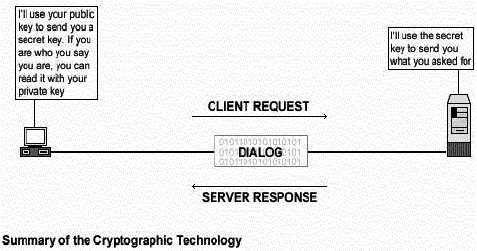

Глава 16 Серверное программное обеспечение (Сетевой сервис шифрования) - OPENSSL серверВ
этой главе |
|
Краткий обзор
Большинство серверов подобных IMAP & POP, Samba, OpenLDAP, FTP, Apache и других, которым необходима аутентификация пользователей перед разрешением использования сервиса, по умолчанию, передают имя пользователя и пароль в простом текстовом виде. Альтернативные механизмы шифрования подобные SSL гарантируют надежность и безопасность транзакций. С этой технологией, данные передаются через сеть в зашифрованном виде. Однажды установив OpenSSL на своем сервере, вы можете использовать его как стороннюю утилиту в других приложениях, для включения в них возможностей SSL.
Из описания OpenSSL:
Проект OpenSSL √ это совместная попытка разработать надежную, коммерчески независимую, полнофункциональную и распространяемую с открытыми кодами реализацию протоколов Secure Sockets Layer (SSL v2/v3) и Transport Layer Security (TLS v1) с полной криптографией. Проект управляется добровольцами всемирного сообщества, которые используют Интернет для общения, планирования и разработки инструментария OpenSSL и связанной с ним документацией.

Преимущества
криптографии
Основные преимущества использования технологий шифрования следующие:
Конфиденциальность данных
Когда сообщение зашифровано, входной открытый текст трансформируется по алгоритму в зашифрованный текст, который скрывает смысл сообщения и может быть отправлен через общедоступный механизм. В этот процесс вовлекается секретный ключ, который используется при шифровании, а позже при расшифровании данных. Без этого ключа, зашифрованные данные становятся бессмысленными.
Целостность данных
Криптографическая контрольная сумма, называемая message authentication code (MAC), может рассчитываться на произвольном определенном пользователем тексте для защиты целостности данных. Результат (текст и MAC) отправляется принимающей стороне, который может проверить контрольный MAC присоединенный к сообщению пересчитывая MAC для сообщения, используя соответствующий секретный ключ и проверяя, что полученный MAC эквивалентен контрольному.
Аутентификация
Персональная идентификация √ это другое применение криптографии, где пользователь/отправитель знает ключ, который может служить для установления его/ее подлинности.
Электронные подписи
Цифровые подписи заверяет отправителя и получателя, что сообщение подлинное и что только владелец ключа мог создать цифровую подпись.
Патенты
Несколько юридических проблем существует при использовании SSL технологии. Если вы планируете использовать OpenSSL для коммерческих целей, то необходимо получить у RSA лицензию на использование RSA библиотек.
Здесь приведено извлечение из файла README OpenSSL:
Разные компании владеют патентами на разные алгоритмы в разных местах мира. Вы сами отвечаете за то, что бы использование любых алгоритмов для вас было юридически законно, проверяя имеются ли какие-либо патенты у вас в стране. Этот файл включает некоторые патенты о которых мы точно или ⌠по слухам■ знаем. Это не точный список.
RSA Data Security держит программный патент на алгоритмы RSA и RC5. Если принадлежащий им код используется в США (и Японии?), вы должны контактировать с RSA Data Security об условиях лицензии. Их веб-сервер: http://www.rsa.com/.
RC4 √ это торговая марка RSA Data Security, так что его использование возможно только с разрешения RSA Data Security.
Алгоритм IDEA патентован Ascom в Австрии, Франции, Германии, Италии, Японии, Нидерландах, Испании, Швеции, Швейцарии, Соединенном Королевстве и США. С ними нужно войти в контакт если вы используете этот алгоритм; их веб-сервер: http://www.ascom.ch/.
Эти
инструкции предполагают.
Unix-совместимые
команды.
Путь к исходным кодам
⌠/var/tmp■ (возможны другие варианты).
Инсталляция
была проверена на Red Hat Linux 6.1 и 6.2.
Все
шаги инсталляции осуществляются
суперпользователем ⌠root■.
OpenSSL версии
0.9.5a
Пакеты.
Домашняя
страница OpenSSL: http://www.openssl.org/
Вы
должны скачать: openssl-0.9.5a.tar.gz
Тарболы.
Хорошей
идеей будет создать список файлов
установленных в вашей системе до
инсталляции Sendmail и после, в результате,
с помощью утилиты diff вы сможете узнать
какие файлы были установлены. Например,
До
инсталляции:
find
/* > OpenSSL1
После
инсталляции:
find
/* > OpenSSL2
Для
получения списка установленных
файлов:
diff
OpenSSL1 OpenSSL2 > OpenSSL-Installed
Раскройте тарбол:
[root@deep
/]# cp openssl-version.tar.gz /var/tmp
[root@deep /]# cd
/var/tmp
[root@deep tmp]# tar xzpf openssl-version.tar.gz
Перейдите в новый Openssl каталог и введите следующие команды на вашем терминале:
Шаг 1
Редактируйте файл c_rehash (vi +11 tools/c_rehash) и измените следующую строку:
DIR=/usr/local/ssl
Должен
быть:
DIR=/usr
Изменение этой строки будет создавать и инсталлировать OpenSSL в ⌠/usr■.
Шаг 2
По умолчанию, исходные файлы OpenSSL предполагают что Perl расположен в каталоге ⌠/usr/local/bin/perl■. Мы должны модифицировать строку ⌠#!/usr/local/bin/perl■ во всех скриптах, которые зависят от perl, на месторасположение Perl в Red Hat Linux - ⌠/usr/bin■.
[root@deep
openssl-0.9.5a]# perl util/perlpath.pl /usr/bin (где
находится ваша программа perl).
Шаг
3
OpenSSL должен знать где находится необходимые OpenSSL исходные библиотеки. Командой приведенной ниже, мы устанавливаем переменную окружения PATH в каталог по умолчанию, где мы разместили исходные файлы OpenSSL.
[root@deep
openssl-0.9.5a]# export LD_LIBRARY_PATH=`pwd`
Шаг
4
Сейчас, мы должны сконфигурировать OpenSSL под нашу систему:
CC="egcs"
\
./Configure linux-elf -DSSL_FORBID_ENULL \
--prefix=/usr
\
--openssldir=/etc/ssl
ЗАМЕЧАНИЕ. Опция ⌠-DSSL_FORBID_ENULL■ нужна, чтобы запретить нулевое шифрование из соображений безопасности.
Шаг 5
Редактируйте файл Makefile.ssl (vi +50 Makefile.ssl) и внесите следующие изменения:
CC=
gcc
Должен быть:
CC=
egcs
Редактируйте файл Makefile.ssl (vi +52 Makefile.ssl) и добавьте/измените следующие строки:
CFLAG= -DTHREADS -D_REENTRANT -DSSL_FORBID_ENULL -DL_ENDIAN -DTERMIO -O9 -funroll-loops -ffast-math -malign-double -mcpu=pentiumpro -march=pentiumpro -fomit-frame-pointer -fno-exceptions -Wall -DSHA1_ASM -DMD5_ASM -DRMD160_ASM
Редактируйте файл Makefile.ssl (vi +79 Makefile.ssl) и измените следующее значение для процессора Pentium Pro:
PROCESSOR= 686
ЗАМЕЧАНИЕ. Три последние модификации выполненные нами устанавливают оптимизационные флаги для компиляции OpenSSL на сервере. Последняя модификация (PROCESSOR=), если у вас Pentium, то измените на 586, Pentium Pro/II/III на 686, a 486 на 486.
Шаг 6
Редактируйте файл Makefile.ssl (vi +161 Makefile.ssl) и измените следующую строку:
MANDIR=$(OPENSSLDIR)/man
Должна
быть:
MANDIR=/usr/man
Этот шаг нужен для определения каталога, куда будут проинсталлированы страницы руководства (man pages) OpenSSL. В нашем случае это каталог ⌠/usr/man■.
Шаг 7
Сейчас мы должны скомпилировать и инсталлировать OpenSSL на сервере:
[root@deep
openssl-0.9.5a]# make -f Makefile
[root@deep openssl-0.9.5a]#
make test
[root@deep openssl-0.9.5a]# make install
[root@deep
openssl-0.9.5a]# mv /etc/ssl/misc/* /usr/bin/
[root@deep
openssl-0.9.5a]# rm -rf /etc/ssl/misc/
[root@deep
openssl-0.9.5a]# rm -rf /etc/ssl/lib/
[root@deep
openssl-0.9.5a]# rm -f /usr/bin/CA.pl
[root@deep
openssl-0.9.5a]# rm -f /usr/bin/CA.sh
[root@deep
openssl-0.9.5a]# install -m 644 libRSAglue.a /usr/lib/
[root@deep
openssl-0.9.5a]# install -m 644 rsaref/rsaref.h
/usr/include/openssl/
[root@deep openssl-0.9.5a]# strip
/usr/bin/openssl
[root@deep openssl-0.9.5a]# mkdir -p
/etc/ssl/crl
Команда "make -f" создаст библиотеки OpenSSL (libcrypto.a и libssl.a) и двоичный файл "openssl". Библиотеки будут созданы в каталоге верхнего уровня, а двоичный файл в каталоге "apps". После успешного создания, команда "make test" будет тестировать библиотеки и в заключении "make install" создаст инсталляционный каталог и инсталлирует OpenSSL.
Команда ⌠mv■ переместит все файлы из ⌠/etc/ssl/misc/■ в каталог ⌠/usr/bin/■. Эти файлы двоичные и должны располагаться в ⌠/usr/bin/■, так как там находятся все исполняемые файлы вашей системы. Также размещение их в этом каталоге поместит их в поле действия переменной окружения PATH.
Команда ⌠rm■ удалит каталоги ⌠/etc/ssl/misc/■ и ⌠/etc/ssl/lib/■ из вашей системы, так как они сейчас располагаются в другом месте. Также, мы удаляем файлы ⌠CA.pl■ и ⌠CA.sh■, представляющие из себя небольшие скрипты для создания ваших собственных CA сертификатов. Эти скрипты, связанные с ⌠openssl ca■ командами, имеют несколько странные требования, и по умолчанию конфигурация OpenSSL не позволяет вам легко напрямую использовать ⌠openssl ca■.Так, что мы создадим скрипт ⌠sign.sh■ позже, чтобы заменить их.
ЗАМЕЧАНИЕ. Пакет bc-1.05a-4.i386.rpm или новее должен быть уже проинсталлирован на вашем Linux сервере или вы получите сообщение об ошибке во время тестирования библиотек OpenSSL.
[root@deep
/]# cd /var/tmp
[root@deep tmp]# rm -rf openssl-version/
openssl-version.tar.gz
Команды ⌠rm■ будет удалять все файлы с исходными кодами, которые мы использовали при компиляции и инсталляции OpenSSL. Также будет удален сжатый архив OpenSSL из каталога ⌠/var/tmp■.
Все программное обеспечение, описанное в книге, имеет определенный каталог и подкаталог в архиве ⌠floppy.tgz■, включающей все конфигурационные файлы для всех программ. Если вы скачаете этот файл, то вам не нужно будет вручную воспроизводить файлы из книги, чтобы создать свои файлы конфигурации. Скопируйте файл связанные с OpenSSL из архива, измените их под свои требования и поместите в нужное место так, как это описано ниже. Файл с конфигурациями вы можете скачать с адреса: http://www.openna.com/books/floppy.tgz
Для запуска OpenSSL сервера следующие файлы должны быть созданы или скопированы в нужный каталог:
Копируйте
файл openssl.cnf в каталог ⌠/etc/ssl/■.
Копируйте
файл sign.sh в каталог ⌠/usr/bin/■.
Вы можете
взять эти файлы из нашего архива
floppy.tgz.
Это общий конфигурационный файл для программы OpenSSL, где вы можете настроить срок хранения ваших ключей, имя организации, адрес и т.д. Эти параметры вы можете изменить в секциях [ CA_default ] и [req_distinguished_name].
Редактируйте файл openssl.cnf (vi /etc/ssl/openssl.cnf):
# Примерный конфигурационный файл OpenSSL.
# Это главным образом используется для создания удостоверяющих запросов.
#
RANDFILE = $ENV::HOME/.rnd
oid_file = $ENV::HOME/.oid
oid_section = new_oids
# Используйте этот конфигурационный файл с опцией "-extfile" из
# утилиты "openssl x509", имя секции содержит
# расширения X.509v3, чтобы использовать:
# extensions =
# (Альтернативно, используйте конфигурационный файл который имеет только
# X.509v3 расширения в основной [= default] секции.)
[ new_oids ]
# Мы можем добавить новый OIDs здесь для использования в 'ca' и 'req'.
# Добавьте простой OID подобно этому:
# testoid1=1.2.3.4
# Или используйте подстановку конфигурационного файла наподобие этого:
# testoid2=${testoid1}.5.6
####################################################################
[ ca ]
default_ca = CA_default # Это ca секция по умолчанию
####################################################################
[ CA_default ]
dir = /etc/ssl # где все хранится
certs = $dir/certs # где хранятся штатные сертификаты
crl_dir = $dir/crl # где хранятся штатные crl
database = $dir/ca.db.index # файл с базой данных индексов.
new_certs_dir = $dir/ca.db.certs # место по умолчанию для новых сертификатов.
certificate = $dir/certs/ca.crt # CA сертификат
serial = $dir/ca.db.serial # текущий регистрационный номер
crl = $dir/crl.pem # текущий CRL
private_key = $dir/private/ca.key # приватный ключ
RANDFILE = $dir/ca.db.rand # приватный файл со случайным числом
x509_extensions = usr_cert # расширение добавляемое к сертификату
# Расширение добавляемое к CRL. Замечание: Netscape communicator
# основывается на V2 CRL так что по умолчанию это закомментировано,
# чтобы оставить V1 CRL.
# crl_extensions = crl_ext
default_days = 365 # сколько времени удостоверяет
default_crl_days = 30 # сколько времени до следующего CRL
default_md = md5 # какой использовать md.
Preserve = no # сохранять порядок пройденных DN
# Несколько различных путей для определения, как подобные запросы должны
# выглядеть для CA, список атрибутов должен быть такой же и плюс некоторые
# необязательные поля
policy = policy_match
# Для CA политик
[ policy_match ]
countryName = match
stateOrProvinceName = match
organizationName = match
organizationalUnitName = optional
commonName = supplied
emailAddress = optional
# Для 'чьих угодно' политик
# В этом пункте вы должны перечислить все приемлемые типы объектов
[ policy_anything ]
countryName = optional
stateOrProvinceName = optional
localityName = optional
organizationName = optional
organizationalUnitName = optional
commonName = supplied
emailAddress = optional
####################################################################
[ req ]
default_bits = 1024
default_keyfile = privkey.pem
distinguished_name = req_distinguished_name
attributes = req_attributes
x509_extensions = v3_ca # Расширение добавляемое к самоподписанным сертификатам
[ req_distinguished_name ]
countryName = Country Name (2-х буквенный код)
countryName_default = CA
countryName_min = 2
countryName_max = 2
stateOrProvinceName = State or Province Name (полное имя)
stateOrProvinceName_default = Quebec
localityName = Locality Name (например, город)
localityName_default = Montreal
0.organizationName = Organization Name (например, компания)
0.organizationName_default = Open Network Architecture
# мы можем сделать это, но обычно это не нужно :-)
#1.organizationName = Second Organization Name (например, компания)
#1.organizationName_default = World Wide Web Pty Ltd
organizationalUnitName = Organizational Unit Name (например, подразделение)
organizationalUnitName_default = Internet Department
commonName = Common Name (например, ВАШЕ имя)
commonName_default = www.openna.com
commonName_max = 64
emailAddress = Email Address
emailAddress_default = admin@openna.com
emailAddress_max = 40
# SET-ex3 = SET extension number 3
[ req_attributes ]
challengePassword = A challenge password
challengePassword_min = 4
challengePassword_max = 20
unstructuredName = An optional company name
[ usr_cert ]
# Эти расширения добавляются, когда 'ca' подписанный запрос.
# Это идет против рекомендаций PKIX, но некоторые CA делают это и
# некоторые программы запрашивают это, чтобы уклониться от
# интерпретирования сертификатов конечных пользователей как CA.
basicConstraints=CA:FALSE
# Здесь приведены некоторые примеры использования nsCertType. Если это
# пропущено, то сертификат может использоваться для каких-нибудь пропусков
# подписаний объектов.
# Это OK для сервера SSL.
# nsCertType = server
# Это используется для объекта, подписывающего сертификат.
# nsCertType = objsign
# Это обычно используется для нормальных клиентов
# nsCertType = client, email
# и для всего, включая объекты подписания:
# nsCertType = client, email, objsign
# Это типично в keyUsage для клиентских сертификатов.
# keyUsage = nonRepudiation, digitalSignature, keyEncipherment
# Это будет выводится в списковом окне комментариев Netscape.
nsComment = "OpenSSL Generated Certificate"
# PKIX рекомендации, безопасно если включены все сертификаты.
subjectKeyIdentifier=hash
authorityKeyIdentifier=keyid,issuer:always
# Это для subjectAltName и issuerAltname.
# Импортирование почтового адрес.
# subjectAltName=email:copy
# Copy subject details
# issuerAltName=issuer:copy
#nsCaRevocationUrl = http://www.domain.dom/ca-crl.pem
#nsBaseUrl
#nsRevocationUrl
#nsRenewalUrl
#nsCaPolicyUrl
#nsSslServerName
[ v3_ca]
# Расширение для типичного CA
# Рекомендация PKIX.
subjectKeyIdentifier=hash
authorityKeyIdentifier=keyid:always,issuer:always
# Это то, что рекомендует PKIX, но некоторые ⌠неправильные■ программы
# засоряют критическими расширениями
#basicConstraints = critical,CA:true
#Так мы делаем это вместо вышеприведенного.
basicConstraints = CA:true
# Ключевое использование: это типично для CA сертификатов. Однако, так как
# это предотвратит использование для проверки самоподписанных
# сертификатов, лучше по умолчанию это не учитывать.
# keyUsage = cRLSign, keyCertSign
# Некоторые могли бы хотеть также
# nsCertType = sslCA, emailCA
# Включение почтового адреса в subject alt name: другая рекомендация PKIX
# subjectAltName=email:copy
# Копирование деталей запрашивающей стороны
# issuerAltName=issuer:copy
# RAW DER hex encoding of an extension: beware experts only!
# 1.2.3.5=RAW:02:03
# You can even override a supported extension:
# basicConstraints= critical, RAW:30:03:01:01:FF
[ crl_ext ]
# CRL extensions.
# Only issuerAltName and authorityKeyIdentifier make any sense in a CRL.
# issuerAltName=issuer:copy
authorityKeyIdentifier=keyid:always,issuer:alwaysЗАМЕЧАНИЕ. Файл ⌠openssl.cnf■ уже будет существовать на вашей системе, когда вы скомпилируете и проинсталлируете программу OpenSSL, и может быть найден в каталоге ⌠/etc/ssl/■. Вам не нужно менять все опции установленные по умолчанию в этом файле; обычно, достаточно внести изменения в секции [CA_default] и [req_distinguished_name].
Команда
⌠openssl ca■ имеет некоторые странные
требования и конфигурация OpenSSL по
умолчанию не позволяет легко использовать
ее напрямую. Поэтому мы будем создавать
программу ⌠sign.sh■, заменяющую собой
⌠openssl ca■.
Создайте программный файл
sign.sh (touch /usr/bin/sign.sh) и добавьте в него
следующие строки:
#!/bin/sh ## ## sign.sh -- Sign a SSL Certificate Request (CSR) ## Copyright (c) 1998-1999 Ralf S. Engelschall, All Rights Reserved. ## # argument line handling CSR=$1 if [ $# -ne 1 ]; then echo "Usage: sign.sign <whatever>.csr"; exit 1 fi if [ ! -f $CSR ]; then echo "CSR not found: $CSR"; exit 1 fi case $CSR in *.csr ) CERT="`echo $CSR | sed -e 's/\.csr/.crt/'`" ;; * ) CERT="$CSR.crt" ;; esac # make sure environment exists if [ ! -d ca.db.certs ]; then mkdir ca.db.certs fi if [ ! -f ca.db.serial ]; then echo '01' >ca.db.serial fi if [ ! -f ca.db.index ]; then cp /dev/null ca.db.index fi # create an own SSLeay config cat >ca.config <<EOT [ ca ] default_ca = CA_own [ CA_own ] dir = /etc/ssl certs = /etc/ssl/certs new_certs_dir = /etc/ssl/ca.db.certs database = /etc/ssl/ca.db.index serial = /etc/ssl/ca.db.serial RANDFILE = /etc/ssl/ca.db.rand certificate = /etc/ssl/certs/ca.crt private_key = /etc/ssl/private/ca.key default_days = 365 default_crl_days = 30 default_md = md5 preserve = no policy = policy_anything [ policy_anything ] countryName = optional stateOrProvinceName = optional localityName = optional organizationName = optional organizationalUnitName = optional commonName = supplied emailAddress = optional EOT # sign the certificate echo "CA signing: $CSR -> $CERT:" openssl ca -config ca.config -out $CERT -infiles $CSR echo "CA verifying: $CERT <-> CA cert" openssl verify -CAfile /etc/ssl/certs/ca.crt $CERT # cleanup after SSLeay rm -f ca.config rm -f ca.db.serial.old rm -f ca.db.index.old # die gracefully exit 0
Сейчас, сделаем эту программу исполняемой и изменим права доступа принятые по умолчанию:
[root@deep /]# chmod 755 /usr/bin/sign.sh
ЗАМЕЧАНИЕ. Вы можете найти прогамму ⌠sign.sh■ в дистрибутиве mod_ssl в каталоге ⌠mod_ssl-version/pkg.contrib/■ или в нашем архиве floppy.tgz. Также заметим, что секция [CA_own] должна быть изменена в соответствии с вашим окружением и не забудьте изменит строку ■openssl verify √Cafile /etc/ssl/certs/ca.crt $CERT■.
Команды описанные ниже мы будем часто использовать, но на самом деле их много больше, и вы должны изучить страницы руководства (man) и документацию, чтобы получить более подробную информацию.
Для примера, мы покажем вам как создавать сертификат для вашего Веб сервера Apache и/или ваш личный CA (Certifying Authority (подтверждение полномочий)) для подписания ваших ⌠Certificate Signing Request■.
ЗАМЕЧАНИЕ. Все команды перечисленные ниже выполняются в каталоге ⌠/etc/ssl/■.
1.1 Создание приватного ключа RSA защищенного парольной фразой для вашего сервера Apache.
[root@deep
ssl]# openssl genrsa -des3 -out server.key 1024
Generating RSA
private key, 1024 bit long
modulus
......................+++++
.....+++++
e is
65537 (0x10001)
Enter PEM pass phrase:
Verifying password -
Enter PEM pass phrase:
Пожалуйста, создайте резервную копию файла server.key и запомните парольную фразу.
1.2 Создание Certificate Signing Request (CSR) с серверным приватным ключом RSA.
[root@deep
ssl]# openssl req -new -key server.key -out server.csr
Using
configuration from /etc/ssl/openssl.cnf
Enter PEM pass
phrase:
You are about to be asked to enter information that will
be incorporated
into your certificate request.
What you are
about to enter is what is called a Distinguished Name or a DN.
There
are quite a few fields but you can leave some blank
For some
fields there will be a default value,
If you enter '.', the
field will be left blank.
-----
Country Name (2 letter
code) [CA]:
State or Province Name (full name)
[Quebec]:
Locality Name (eg, city) [Montreal]:
Organization
Name (eg, company) [Open Network Architecture]:
Organizational
Unit Name (eg, section) [Internet Department]:
Common Name (eg,
YOUR name) [www.openna.com]:
Email Address
[admin@openna.com]:
Please enter the following 'extra'
attributes
to be sent with your certificate request
A
challenge password []:.
An optional company name []:.
ЗАМЕЧАНИЕ. Убедитесь, что вы ввели FQDN (Полностью определенное доменное имя (⌠Fully Qualified Domain Name■)) сервера, когда OpenSSL спросил вас о ⌠CommonName■ (например, когда вы создаете CSR для Веб сервера который будет позже доступен через https://www.mydomain.com/, введите www.mydomain.com).
После создания вашего Certificate Signing Request (CSR), у вас возникают два варианта:
Первый, это послать этот сертификат в коммерческие структуры Certifying Authority (CA), подобные Verisign или Thawte, для подписания. Вы обычно отправляете CSR через Веб форму, оплачиваете подписание, ждете Сертификата и запоминаете его в файле ⌠server.crt■. Результатом всех этих операций будет настоящий сертификат, который может быть использован с Apache.
Второй, вы можете использовать ваш собственный CA и затем самостоятельно подписывать CSR этим CA. Это решение экономично, и позволяет организации поддерживать собственный CA сервер и создавать так много сертификатов, как нужно для внутреннего использования без выплаты каких-нибудь денег коммерческим CA.
К сожалению использование ваших собственных CA для создания сертификатов создает ряд проблем в электронной коммерции, потому что заказчики должны иметь некоторое доверие вашей организации через использования признанных коммерческих CA. Смотрите ниже информацию о том, как самостоятельно подписать CSR собственным CA.
1.3 Создание вашего приватного ключа RSA (CA).
[root@deep
ssl]# openssl genrsa -des3 -out ca.key 1024
Generating RSA
private key, 1024 bit long
modulus
...........................+++++
............................................+++++
e
is 65537 (0x10001)
Enter PEM pass phrase:
Verifying
password - Enter PEM pass phrase:
Сделайте резервную копию этого файла ca.key и запомните парольную фразу (pass-phrase), которую вы ввели.
1.4 Создание самоподписанного (CA) сертификата (структура x509) с ключом RSA из CA.
[root@deep
ssl]# openssl req -new -x509 -days 365 -key ca.key -out ca.crt
Using
configuration from /etc/ssl/openssl.cnf
Enter PEM pass
phrase:
You are about to be asked to enter information that will
be incorporated
into your certificate request.
What you are
about to enter is what is called a Distinguished Name or a DN.
There
are quite a few fields but you can leave some blank
For some
fields there will be a default value,
If you enter '.', the
field will be left blank.
-----
Country Name (2 letter
code) [CA]:
State or Province Name (full name)
[Quebec]:
Locality Name (eg, city) [Montreal]:
Organization
Name (eg, company) [Open Network Architecture]:
Organizational
Unit Name (eg, section) [Internet Department]:CA Marketing
Common
Name (eg, YOUR name) [www.openna.com]:
Email Address
[admin@openna.com]:
[root@deep ssl]# mv server.key
private/
[root@deep ssl]# mv ca.key private/
[root@deep
ssl]# mv ca.crt certs/
ЗАМЕЧАНИЕ. Команда ⌠req■ создает самоподписанный сертификат, когда используется переключатель -x509.
1.5 Подписание запросов сертификата. (Мы создаем и используем наш личный Certificate Authority (CA))
Приготовьте скрипт для подписания (он нужен, потому что команда ⌠openssl ca'' имеет некоторые странные требования и по умолчанию конфигурация OpenSSL не позволяет ее легко использовать напрямую). Скрипт с именем sign.sh находится в нашем архиве flopy.tgz в каталоге openssl. Используйте этот скрипт для подписания.
Сейчас вы можете использовать CA для подписания CSR сервера, чтобы создать реальный сертификат для внутреннего использования в Веб сервере Apache (предполагаем, что вы уже имеете файл server.csr под рукой):
[root@deep
ssl]# /usr/bin/sign.sh server.csr
CA signing: server.csr ->
server.crt:
Using configuration from ca.config
Enter PEM
pass phrase:
Check that the request matches the
signature
Signature ok
The Subjects Distinguished Name is
as follows
countryName :PRINTABLE:'CA'
stateOrProvinceName
:PRINTABLE:'Quebec'
localityName
:PRINTABLE:'Montreal'
organizationName :PRINTABLE:'Open Network
Architecture'
organizationalUnitName :PRINTABLE:'Internet
Department'
commonName :PRINTABLE:'www.openna.com'
emailAddress
:IA5STRING:'admin@openna.com'
Certificate is to be certified
until Dec 1 14:59:29 2000 GMT (365 days)
Sign the certificate?
[y/n]:y
1 out of 1 certificate requests certified, commit?
[y/n]y
Write out database with 1 new entries
Data Base
Updated
CA verifying: server.crt <-> CA cert
server.crt:
OK
This signs the CSR and results in a server.crt
file.
[root@deep ssl]# mv server.crt certs/
Сейчас мы имеем два файла: server.key и server.crt. Они могут быть использованы в конфигурационном файле httpd.conf Веб-сервера Apache следующим образом:
SSLCertificateFile
/etc/ssl/certs/server.crt (публичный
ключ веб сервера)
SSLCertificateKeyFile
/etc/ssl/private/server.key (приватный
ключ веб сервера)
Файл server.csr больше не нужен.
[root@deep ssl]# rm -f server.csr
ЗАМЕЧАНИЕ. Если вы получили сообщение об ошибке во время подписания сертификата, это потому что вы ввели неправильно FQDN (⌠Fully Qualified Domain Name■) для сервера, когда OpenSSL запросил у вас ⌠CommonName■; ⌠CommonName■ должен представлять из себя что-то подобное ⌠my.domain.com■ и не ⌠domain.com■. Также, так как вы создавали сертификат и CA сертификат, важно, чтобы хотя бы небольшая часть информации представленной в них отличалась, или вы можете столкнуться с проблемами во время подписания удостоверяющих запросов.
Сделайте ваши ключи ⌠Для чтения и записи■ только для пользователя root. Это важно, потому что никому не нужно работать к ним. Для этого выполните следующие команды.
[root@deep
/]# chmod 600 /etc/ssl/certs/ca.crt
[root@deep /]# chmod 600
/etc/ssl/certs/server.crt
[root@deep /]# chmod 600
/etc/ssl/private/ca.key
[root@deep /]# chmod 600
/etc/ssl/private/server.key
OpenSSL может использоваться для:
Создания вашего сертификационного сервера.
Обеспечения конфиденциальности данных, целостности, аутентификации и электронных подписей при передачи для пользователей.
Безопасность электронных коммерческих транзакций.
> /etc/ssl > /etc/ssl/crl > /etc/ssl/certs > /etc/ssl/private > /etc/ssl/openssl.cnf > /usr/bin/openssl > /usr/bin/c_rehash > /usr/bin/sign.sh > /usr/man/man1/verify.1 > /usr/man/man1/version.1 > /usr/man/man1/x509.1 > /usr/man/man3/BN_CTX_new.3 > /usr/man/man3/BN_CTX_start.3 > /usr/man/man3/BN_add.3 > /usr/man/man3/BN_add_word.3 > /usr/man/man3/BN_bn2bin.3 > /usr/bin/c_hash > /usr/bin/c_info > /usr/bin/c_issuer > /usr/bin/c_name > /usr/bin/der_chop > /usr/include/openssl > /usr/include/openssl/e_os.h > /usr/include/openssl/e_os2.h > /usr/include/openssl/crypto.h > /usr/include/openssl/tmdiff.h > /usr/include/openssl/opensslv.h > /usr/include/openssl/opensslconf.h > /usr/include/openssl/ebcdic.h > /usr/include/openssl/md2.h > /usr/include/openssl/md5.h > /usr/include/openssl/sha.h > /usr/include/openssl/mdc2.h > /usr/include/openssl/hmac.h > /usr/include/openssl/ripemd.h > /usr/include/openssl/des.h > /usr/include/openssl/rc2.h > /usr/include/openssl/rc4.h > /usr/include/openssl/rc5.h > /usr/include/openssl/idea.h > /usr/include/openssl/blowfish.h > /usr/include/openssl/cast.h > /usr/include/openssl/bn.h > /usr/include/openssl/rsa.h > /usr/include/openssl/dsa.h > /usr/include/openssl/dh.h > /usr/include/openssl/buffer.h > /usr/include/openssl/bio.h > /usr/include/openssl/stack.h > /usr/include/openssl/safestack.h > /usr/include/openssl/lhash.h > /usr/include/openssl/rand.h > /usr/include/openssl/err.h > /usr/include/openssl/objects.h > /usr/include/openssl/evp.h > /usr/include/openssl/asn1.h > /usr/include/openssl/asn1_mac.h > /usr/include/openssl/pem.h > /usr/include/openssl/pem2.h > /usr/include/openssl/x509.h > /usr/include/openssl/x509_vfy.h > /usr/include/openssl/x509v3.h > /usr/include/openssl/conf.h > /usr/include/openssl/txt_db.h > /usr/include/openssl/pkcs7.h > /usr/include/openssl/pkcs12.h > /usr/include/openssl/comp.h > /usr/include/openssl/ssl.h > /usr/include/openssl/ssl2.h > /usr/include/openssl/ssl3.h > /usr/include/openssl/ssl23.h > /usr/include/openssl/tls1.h > /usr/include/openssl/rsaref.h > /usr/lib/libcrypto.a > /usr/lib/libssl.a > /usr/lib/libRSAglue.a > /usr/man/man1/CA.pl.1 > /usr/man/man1/asn1parse.1 > /usr/man/man3/BN_cmp.3 > /usr/man/man3/BN_copy.3 > /usr/man/man3/BN_generate_prime.3 > /usr/man/man3/BN_mod_inverse.3 > /usr/man/man3/BN_mod_mul_montgomery.3 > /usr/man/man3/BN_mod_mul_reciprocal.3 > /usr/man/man3/BN_new.3 > /usr/man/man3/BN_num_bytes.3 > /usr/man/man3/BN_rand.3 > /usr/man/man3/BN_set_bit.3 > /usr/man/man3/BN_zero.3 > /usr/man/man3/CRYPTO_set_ex_data.3 > /usr/man/man3/DH_generate_key.3 > /usr/man/man3/DH_generate_parameters.3 > /usr/man/man3/DH_get_ex_new_index.3 > /usr/man/man3/DH_new.3 > /usr/man/man3/DH_set_method.3 > /usr/man/man3/DH_size.3 > /usr/man/man3/DSA_SIG_new.3 > /usr/man/man3/DSA_do_sign.3 > /usr/man/man3/DSA_dup_DH.3 > /usr/man/man3/DSA_generate_key.3 > /usr/man/man3/DSA_generate_parameters.3 > /usr/man/man3/DSA_get_ex_new_index.3 > /usr/man/man3/DSA_new.3 > /usr/man/man3/DSA_set_method.3 > /usr/man/man3/DSA_sign.3 > /usr/man/man3/DSA_size.3 > /usr/man/man3/ERR_GET_LIB.3 > /usr/man/man3/ERR_clear_error.3 > /usr/man/man3/ERR_error_string.3 > /usr/man/man3/ERR_get_error.3 > /usr/man/man3/ERR_load_crypto_strings.3 > /usr/man/man3/ERR_load_strings.3 > /usr/man/man3/ERR_print_errors.3 > /usr/man/man3/ERR_put_error.3 > /usr/man/man3/ERR_remove_state.3 > /usr/man/man3/EVP_DigestInit.3 > /usr/man/man3/EVP_EncryptInit.3 > /usr/man/man3/OPENSSL_VERSION_NUMBER.3 > /usr/man/man3/OpenSSL_add_all_algorithms.3 > /usr/man/man3/RAND_add.3 > /usr/man/man3/RAND_bytes.3 > /usr/man/man3/RAND_cleanup.3 > /usr/man/man3/RAND_egd.3 > /usr/man/man3/RAND_load_file.3 > /usr/man/man3/RAND_set_rand_method.3 > /usr/man/man3/RSA_blinding_on.3 > /usr/man/man3/RSA_check_key.3 > /usr/man/man3/RSA_generate_key.3 > /usr/man/man3/RSA_get_ex_new_index.3 > /usr/man/man3/RSA_new.3 > /usr/man/man3/RSA_padding_add_PKCS1_type_1.3 > /usr/man/man3/RSA_print.3 > /usr/man/man3/RSA_private_encrypt.3 > /usr/man/man3/RSA_public_encrypt.3 > /usr/man/man3/RSA_set_method.3 > /usr/man/man3/RSA_sign.3 > /usr/man/man3/RSA_sign_ASN1_OCTET_STRING.3 > /usr/man/man3/RSA_size.3 > /usr/man/man3/blowfish.3 > /usr/man/man3/bn.3 > /usr/man/man1/ca.1 > /usr/man/man1/ciphers.1 > /usr/man/man1/crl.1 > /usr/man/man1/crl2pkcs7.1 > /usr/man/man1/dgst.1 > /usr/man/man1/dhparam.1 > /usr/man/man1/dsa.1 > /usr/man/man1/dsaparam.1 > /usr/man/man1/enc.1 > /usr/man/man1/gendsa.1 > /usr/man/man1/genrsa.1 > /usr/man/man1/nseq.1 > /usr/man/man1/openssl.1 > /usr/man/man1/pkcs12.1 > /usr/man/man1/pkcs7.1 > /usr/man/man1/pkcs8.1 > /usr/man/man1/req.1 > /usr/man/man1/rsa.1 > /usr/man/man1/s_client.1 > /usr/man/man1/s_server.1 > /usr/man/man1/sess_id.1 > /usr/man/man1/smime.1 > /usr/man/man1/speed.1 > /usr/man/man1/spkac.1 > /usr/man/man3/bn_internal.3 > /usr/man/man3/buffer.3 > /usr/man/man3/crypto.3 > /usr/man/man3/d2i_DHparams.3 > /usr/man/man3/d2i_RSAPublicKey.3 > /usr/man/man3/dh.3 > /usr/man/man3/dsa.3 > /usr/man/man3/err.3 > /usr/man/man3/hmac.3 > /usr/man/man3/lh_stats.3 > /usr/man/man3/lhash.3 > /usr/man/man3/md5.3 > /usr/man/man3/mdc2.3 > /usr/man/man3/rand.3 > /usr/man/man3/rc4.3 > /usr/man/man3/ripemd.3 > /usr/man/man3/rsa.3 > /usr/man/man3/sha.3 > /usr/man/man3/threads.3 > /usr/man/man3/SSL_get_error.3 > /usr/man/man3/ssl.3 > /usr/man/man5/config.5 > /usr/man/man7/des_modes.7